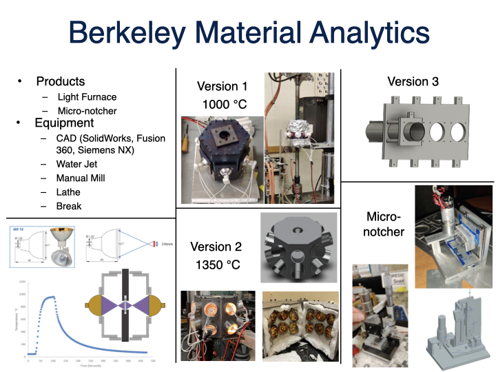

Test Design Engineer
In graduate school I tested the mechanical properties of materials, and examined those materials microstructures to determine why those materials have their mechanical properties.
The light furnace uses gold plated ellipsoidal halogen light bulbs to reflect and focus IR light onto a surface. This was mounted on a load frame to do high temperature mechanical tests. Surrounding a sample in these allows for the fast heating of materials.
Worked in a class action lawsuit examining failed IVC Filters.
Threw this together over a weekend using spare parts I had lying around—servos, Arduino, some aluminum extrusion, and a healthy dose of curiousity. The setup combines CAD design, Python scripting, and basic controls to repeatedly stress the component until failure. Not the fanciest test rig, but it gets the job done and proves the concept without waiting months for proper lab equipment.
1. Linear Motion: Created by Roomba motor, screw, and nut
2. Load Control: Load cell
3. Motor Control: Relays
4. Microcontroller: Arduino uno
5. Software: Fusion 360, Python (Spyder)
6. Data Visualization & Management: Spyder GUI
The Grub Deterrent is named after my food-obsessed dog who can't resist raiding his sibling's bowl. This automated feeder uses dual servos to open on command, giving my other dog an 8-minute window to eat in peace before sealing shut—keeping her leftovers safe from Grub's notorious scavenging missions.
The Grub Feeder is designed to keep my dog, nicknamed Grub, entertained and mentally stimulated. With a simple press of the remote, this interactive device dispenses a single piece of kibble into the bowl—extending mealtime and transforming it into an entertaining game. The system uses an IR transmitter and receiver with an Arduino and servo motor, giving me the power to also use it intermittently to reward good behavior from across the room.
The flour flame thrower was a high school weekend project that was born from a science demo showing that when flour is thoroughly mixed with oxygen, it is flammable. That made me ask what if I scaled that demo up?
A Pneumatic exoskeleton arm that is operated by wrist movement.
This is an improvement of a viral video of an illusion where water looks like it is standing in place. This happens when a water hose vibrates at a frequency near the frame rate of the camera. The problem is in real life you cannot see this cool phenomenon and I wanted to fix that. In my system the water hose oscillation frequency is matching the camera shutter speed but instead in matching the frequency of light pulses. I’m using LEDs pulsing at 60Hz which is so fast that it is imperceptible to the human eye and just looks on. The water hose oscillations match the frequency of the light so that it actually looks like the water is frozen in place in real life.